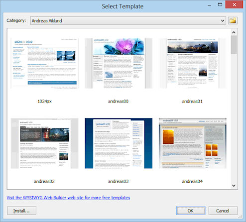

Using templates
Templates can later be used by you (or someone else) to use the base for a new web site or page.
When you save a web page to a template it will include all of the images and other objects in the template file. So there is no need to copy these files seperately. You simply copy one file from one computer to another and you can start or continue working on your webpages. Web Builder Templates have the .wtp extension (or .wwb for older templates) and are saved in the sub folder \templates of the Web Builder system subfolder in your documents folder. C:\Users\YourName\Documents\WYSIWYG Web Builder\system\templates
where YourName is the name of your Windows user account.
IMPORTANT NOTE:
If you have changed the system folder in Menu->Options->Tools->Files & Folders->System Folder then the template folder will also change! So for instance if you've changed it to C:\My Web Sites\ then the system folder (and all sub folders) will be in
C:\My Web Sites\system\templates
Please read this for more details: https://www.wysiwygforum.tk/viewtopic.php?f=10&t=30276
Also note that template folder should ONLY contain templates (.wtp files). Please do not put any other files is this folder!
Additional templates can be downloaded here: Templates
Note that most templates are distributed as zip, so you first will have to unpack the files before you can use them.
Create a web site based on a template
Select File->New Web Site From Template to display the template selection window.
Choose a template and click OK. The Save Web Site As window will now ask you to specify a name for the web site. Enter the name and click Save to create the new web site based on the select template.

Create a new page based on a template
It is also possible to create a new page based on a template: Menu->Page->New Page from Template
Save website as a template
To save your own web site as template select: File->Save As Template from the menu.
Important information about the usage of templates and images:
When using templates from this website, the forum or any other location, it's important to understand that these templates may contain copyrighted images. The images that are used in templates are intended for clarity and for purposes presentation only.
If you plan to use a template as the basis of your website then you should replace all images of people, objects, animals etc with images that you have a license for!
Using unauthorized images may result in copyright claims from the copyright owner!
WARNING:
Image services are very active in finding websites that infringement the copyrights of their images, so please be better safe than sorry!
Just because these templates are on our website does not mean that we own the copyrights, most templates were created by other users and there is no way for us to verify whether the used images are officially licensed. So we have placed the templates on the website in good faith. But just to be sure you should never used the included images on a live website!!!
In no event shall Pablo Software Solutions or its suppliers be liable for any damages (including, without limitation, damages for loss of data or profit, or due to business interruption,) arising out of the use or inability to use the materials on Pablo Software Solution's Internet site, even if Pablo Software Solutions authorized representative has been notified orally or in writing of the possibility of such damage.
Of course we will remove any copyrighted material immediately when we find out something is wrong.
By using templates from https://www.wysiwygwebbuilder.tk you acknowledge that you have read, understand and agree to the term of this agreement.
IF YOU DO NOT AGREE TO THESE TERMS, DO NOT USE THE TEMPLATES IN ANY WAY, AND PROMPTLY DELETE ANY COPIES OF THE TEMPLATES IN YOUR POSSESSION.